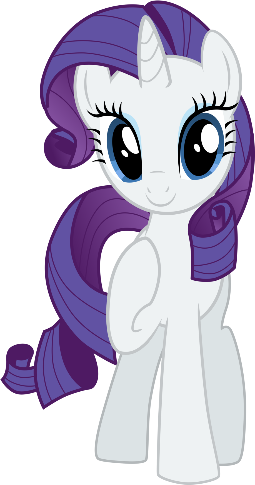

About Me
Hello! I'm a Fluttershy pony from the magical country of Equestria, and I'm happy to tell you about
myself
as part of
our school project. In this task we need to describe myself, and I will be very happy to share with you
the
story of my
life and character.
Well, shall we begin?
I, Fluttershy, belong to the magical country of Equestria, where I live with other magical ponies, my
greatest passion
is to take care of animals and discover the beauty of nature.
My heart is full of love for all living things. I always try to find a common language with all animals
and
understand
their needs and feelings. Beast magic, which is my special ability, helps me connect with them and help
them
when they
need help.
I always try to be peaceful and friendly. My friends often say that I am the softest pony of them all,
but
behind my
soft exterior hides a strong inner strength. I believe that kindness and understanding can change the
world,
so I always
try to help other animals and people in need.
It's never boring with me, so let's go!

My Friends

Rarity
Rarity is an extremely talented pony with an impeccable sense of style. Her fashion creations
impress
with
their
elegance and luxury. I admire her ability to create masterpieces from ordinary materials. She
has an
understanding of
fashion trends and the ability to turn any fabric into an unparalleled masterpiece. But she is
not
just
a
fashionista -
she also has a heart for charity and helping others. Rarity is eccentric in her actions and
expresses
herself through
her unique creations. She is a living example of how to combine talent, style and kindness in
your
life.

Rainbow Dash
Rainbow Dash is my best friend! She is an energetic, incomparable pony with a rebellious
spirit
and
unparalleled flying
skills. Her goal is to fly faster, higher and further, conquering the skies with her
courageous
heart and wings filled
with courage and courage. Her cheerfulness and indomitable spirit are inspiring
everyone she meets.
Contacts
Email: yyggggu4@gmail.com
Phone: 123-456-7890
Adress: Equestria, Ponyville